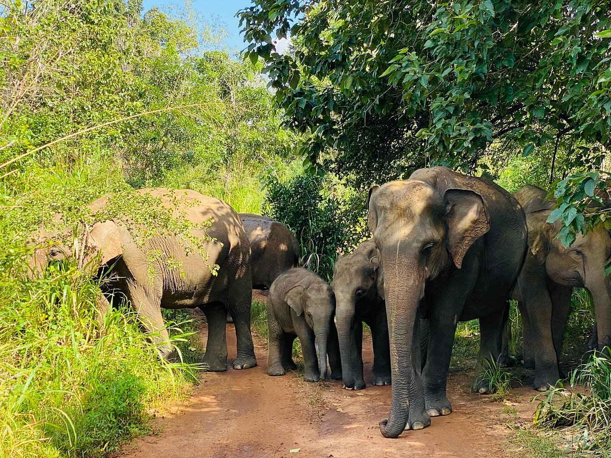

Key Attractions

The Dambulla Cave Temple, a UNESCO site, contains magnificent Buddha statues and vibrant mural paintings spanning centuries.

The Golden Temple with its huge Buddha statue offers spiritual ambience and panoramic views of the surrounding town and hills.

Dambulla Market is a vibrant hub for local produce, spices, and handicrafts, offering a lively cultural experience.

The Dambulla viewpoint offers breathtaking panoramas of lush landscapes and nearby rock formations, perfect for photography enthusiasts.

Hurulu Eco Park is ideal for wildlife safaris, bird watching, and seeing elephants in their natural habitat.